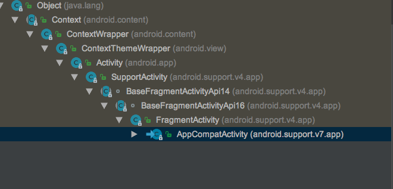
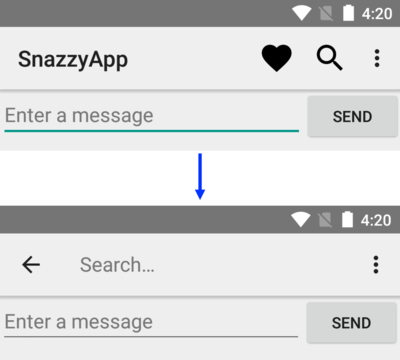

android使用AppCompatActivity添加应用操作栏
我们的项目是以前的一个大牛搞的，我是刚接触安卓，不是很理解一些做法。比如说，其继承自 FragmentActivity 的 BaseActivity，却不是使用的 AppCompatActivity。然后其头部的操作栏，也是自己定义了一个ActionBar,感觉有点过时了。特意的看了一下现在的实现办法。
AppCompatActivity
先看一下类继承关系(Mac 快捷键 ctrl+h)：

对这个类的解释是：
对使用 support library 操作栏特性的 activity的基类。
在API 等级 7 以上运行时，可以通过扩展这个类并把这个Activity的主题设置为类似Theme.AppCompat的主题。
至于怎么样添加 操作栏 参考 Action Bar API指南
FragmentActivity
这个类是为了使用 Fragment, Loader API的 Activity 的基类。
使用此类而不是新平台的内置片段和加载器支持时，必须分别使用getSupportFragmentManager（）和getSupportLoaderManager（）方法来访问这些功能。
已知限制：
当使用
总结
通过以上对比，可以发现，其实 AppCompatActivity 兼容以前所有的特性，并提供更新的特性。
这就怪不得当我在 FragmentActivity 继承的类中使用 FloatingActionButton 的时候会报错的问题。
Toolbar
在 V7 支持库可以将小部件 Toolbar 作为应用栏使用。也可以通过其他方式实现应用栏，例如，某些主题默认情况下会设置一个 ActionBar 作为应用栏。但是，使用 appcompat Toolbar 设置的应用栏能兼容最广泛的设备，也使您能够随着应用的发展自定义应用栏。
添加应用栏
从 Android 3.0（API 级别 11）开始，所有使用默认主题的 Activity 均使用 ActionBar 作为应用栏。不过，经过不同 Android 版本的演化，应用栏功能已逐渐添加到原生 ActionBar 中。因此，原生 ActionBar 的行为会随设备使用的 Android 系统的版本而发生变化。相比之下，最新功能已添加到支持库版本的 Toolbar 中，并且这些功能可以在任何能够使用该支持库的设备上使用。
因此，您应使用支持库的 Toolbar 类来实现 Activity 的应用栏。使用支持库的工具栏有助于确保您的应用在最大范围的设备上保持一致的行为。例如，Toolbar 小部件能够在运行 Android 2.1（API 级别 7）或更高版本的设备上提供 Material Design 体验，但除非设备运行的是 Android 5.0（API 级别 21）或更高版本，否则原生操作栏不会支持 Material Design。
向 Activity 添加工具栏
扩展一个AppCompatActivity
public class MyActivity extends AppCompatActivity { |
注：请为您应用中每个使用 Toolbar 作为应用栏的 Activity 进行此更改。
在应用清单中，将
<application |
向 Activity 的布局添加一个 Toolbar。例如，以下布局代码可以添加一个 Toolbar 并赋予其浮动在 Activity 之上的外观：
<android.support.v7.widget.Toolbar |
Material Design 规范建议应用栏具有 4 dp 的仰角。
将工具栏定位在 Activity 布局的顶部，因为您要使用它作为应用栏。
在 Activity 的 onCreate() 方法中，调用 Activity 的 setSupportActionBar() 方法，然后传递 Activity 的工具栏。该方法会将工具栏设置为 Activity 的应用栏。例如：
|
您的应用现在具有一个基本操作栏。默认情况下，操作栏只包含应用的名称和一个溢出菜单。选项菜单最初只包含 Settings 菜单项。您可以按照添加和处理操作中所述向操作栏和溢出菜单添加更多操作。
将工具栏设置为 Activity 的应用栏后，您就可以访问 v7 appcompat 支持库的 ActionBar 类提供的各种实用方法。您可以通过此方法执行许多有用的操作，例如隐藏和显示应用栏。
要使用 ActionBar 实用方法，请调用 Activity 的 getSupportActionBar()方法。此方法将返回对 appcompat ActionBar 对象的引用。获得该引用后，您就可以调用任何一个 ActionBar 方法来调整应用栏。例如，要隐藏应用栏，请调用 ActionBar.hide()。
添加与控制动作
应用栏允许为用户的动作添加按钮。此功能允许您将当前上下文的最重要操作放在应用程序的顶部。例如，当用户查看他们的照片卷时，照片浏览应用可能会显示共享并在顶部创建相册按钮;当用户查看单张照片时，该应用可能会显示裁剪和过滤按钮。
应用栏的空间是有限制的。如果一个app声明了太多的动作而无法容纳的话，应用栏会把过量的动作发送到一个 overflow菜单。应用栏也可以指定一个动作永远在一个 overflow菜单中，而不是显示在应用栏中。
添加动作按钮
动作溢出中可用的所有操作按钮和其他项都在XML菜单资源中定义。要向操作栏添加操作，请在项目的res/menu/目录中创建新的XML文件。
<menu xmlns:android="http://schemas.android.com/apk/res/android" > |
app:showAsAction属性指定动作是否显示在应用栏上。当设置为app:showAsAction="ifRoom"时，如果应用栏上有空间，就会显示在应用栏上；如果没有空间的话，就会发送到overflow菜单。app:showAsAction="never"则会设置永远都在overflow菜单内。
响应动作
当用户选择了应用栏上的项目的时候，系统会调用 activity的onOptionsItemSelected()方法，并传递一个MenuItem过去以表示是哪个项被点击了。在我们的onOptionsItemSelected()实现中，调用MenuItem.getItemId()来确定，哪个项被按下。返回的ID与您在相应
例如，以下代码检查用户选择的操作。如果方法无法识别用户的操作，则会调用超类方法：
|
添加返回按钮
您的应用应该可以让用户轻松找到返回应用主屏幕的方式。一种简单的方法是在应用栏上为除主要活动之外的所有活动提供“向上”按钮。当用户选择“向上”按钮时，应用程序将导航到父活动。
本课程向您展示如何通过在清单中声明活动的父级并启用应用栏的“向上”按钮来向活动添加“向上”按钮。
声明一个父activity
要支持活动中的向上功能，您需要声明活动的父级。您可以通过设置android：parentActivityName属性在应用程序清单中执行此操作。
android：parentActivityName属性是在Android 4.1（API级别16）中引入的。要支持使用旧版Android的设备，请定义
例如，假设您的应用具有名为MainActivity的主要活动和单个子活动。以下清单代码声明了这两个活动，并指定了父/子关系：
<application ... > |
启用向上按钮
要为具有父活动的活动启用“向上”按钮，请调用应用栏的setDisplayHomeAsUpEnabled（）方法。
通常，您会在创建活动时执行此操作。例如，以下onCreate（）方法将工具栏设置为MyChildActivity的应用栏，然后启用该应用栏的“向上”按钮：
|
您不需要在活动的onOptionsItemSelected（）方法中捕获up动作。相反，该方法应调用其超类，如响应操作中所示。超类方法通过导航到父活动响应Up选项，如应用清单中指定的那样。
使用操作视图和操作提供程序
v7 appcompat支持库Toobar为用户提供了几种与您的应用交互的不同方式。上面的课程描述了如何定义一个动作，可以是一个按钮或一个菜单项。本课程介绍如何添加两个通用组件：
- 操作视图是在应用栏中提供丰富功能的操作。例如，搜索操作视图允许用户在应用栏中键入其搜索文本，而无需更改活动或片段。
- 动作提供者是具有自己的自定义布局的动作。该操作最初显示为按钮或菜单项，但当用户单击该操作时，操作提供程序将以您想要定义的任何方式控制操作的行为。 例如，操作提供程序可能通过显示菜单来响应单击。
Android支持库提供了几个专门的操作视图和操作提供程序小部件。 例如，SearchView小部件实现用于输入搜索查询的操作视图，ShareActionProvider小部件实现用于与其他应用程序共享信息的操作提供程序。 您还可以定义自己的操作视图和操作提供程序。
添加一个操作视图
要添加操作视图，请在工具栏的菜单资源中创建
- actionViewClass：实现操作的窗口小部件的类。
- actionLayout：描述操作组件的布局资源。
将showAsAction属性设置为“ifRoom | collapseActionView”或“never | collapseActionView”。 collapseActionView标志指示当用户未与其交互时如何显示窗口小部件：如果窗口小部件位于应用栏上，则应用应将窗口小部件显示为图标。 如果窗口小部件位于溢出菜单中，则应用程序应将窗口小部件显示为菜单项。 当用户与操作视图交互时，它会展开以填充应用栏。
例如，以下代码将SearchView小部件添加到应用栏：
<item android:id="@+id/action_search" |
如果用户未与窗口小部件交互，则应用程序将窗口小部件显示为android：icon指定的图标。 （如果应用栏中没有足够的空间，应用程序会将操作添加到溢出菜单。）当用户点击图标或菜单项时，窗口小部件会扩展以填充工具栏，允许用户与其进行交互。

如果需要配置操作，请在活动的onCreateOptionsMenu（）回调中执行此操作。 您可以通过调用getActionView（）方法获取操作视图的对象引用。 例如，以下代码获取上一代码示例中定义的SearchView小部件的对象引用：
|
响应动作视图扩展
如果操作的
如果要在展开或折叠操作时执行某些操作，可以定义实现MenuItem.OnActionExpandListener的类，并将该类的成员传递给setOnActionExpandListener（）。 例如，您可能希望根据操作视图是展开还是折叠来更新活动。 以下代码段显示了如何定义和传递侦听器：
|
添加一个动作提供者
要声明操作提供程序，请在工具栏的菜单资源中创建
例如，以下代码声明了一个ShareActionProvider，它是一个在支持库中定义的小部件，允许您的应用与其他应用共享数据：
|
在这种情况下，没有必要为小部件声明一个图标，因为ShareActionProvider提供了自己的图形。 如果您使用自定义操作，请声明一个图标。
有关创建自定义操作提供程序的信息，请参阅ActionProvider参考。 有关配置ShareActionProvider的信息，请参阅该类的参考。
原文作者: Gowa2017 Zhang
原文链接: https://gowa2017.github.io/Android/android使用AppCompatActivity添加应用操作栏.html
版权声明: 转载请注明出处(必须保留作者署名及链接)